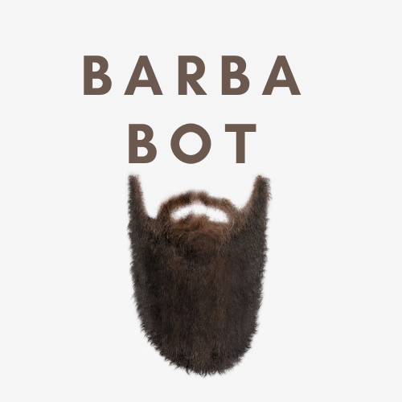

BarbaBot
BarbaBot is a basic chatbot that uses feed-forward model. It answers questions which are associated with the patterns inside the intents.
Mathematician successful at operating in both self-directed and team-based capacities.
Familiar with NumPy, TensorFlow, NLTK, and SpaCy on Python. Decisive problem solver, clear communicator, and analytical thinker. Detail-oriented with strong knowledge of deep learning.
@assademre.

BarbaBot is a basic chatbot that uses feed-forward model. It answers questions which are associated with the patterns inside the intents.
Suicide detection detects whether an input message is suicide related or not. The main focus in this project is Reddit, so that the database which is used in the model has ocurred with 'suicide' and 'non-suicide' labelled data taken from Reddit.
Microexpression Detection spots microexpressions in a given image and matches it with one of the emotions such as anger, disgust, fear, happiness, neutral, sadness, and surprise.